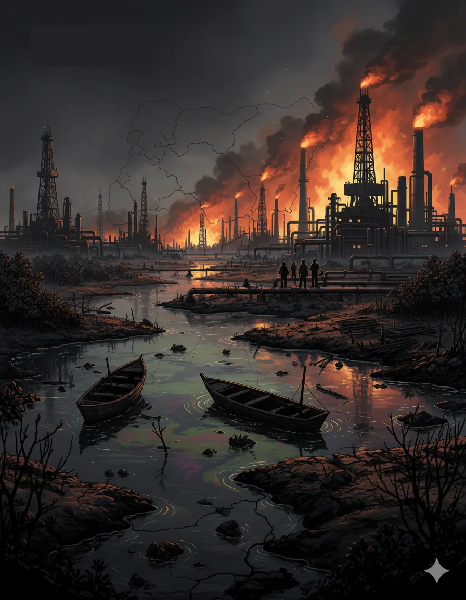

Nigeria’s oil wealth has played a central role in shaping the country’s economic and political development. Yet, despite generating enormous revenue, oil exploitation has produced severe environmental degradation, social conflict, and economic inequality in the Niger Delta region. This study examines the complex relationship between oil production, environmental destruction, and violent conflict, conceptualized as “petro-violence.”
The paper situates the Niger Delta crisis within the broader framework of the resource curse, where countries rich in natural resources often experience slower economic development, weak institutions, and political instability. In Nigeria, oil wealth has fostered rent-seeking behavior, corruption, and the concentration of economic benefits among political elites, while local communities in oil-producing regions remain impoverished and environmentally devastated.
The research highlights how decades of oil exploration have contaminated farmland, rivers, and ecosystems through oil spills, gas flaring, and pipeline explosions. These environmental impacts have destroyed traditional livelihoods such as farming and fishing, intensifying poverty and fueling youth militancy and violent conflict in the region. The study argues that petro-violence is not simply a security issue but a systemic outcome of governance failures, inequitable resource distribution, and unsustainable resource exploitation.
The paper contributes to broader discourse on environmental governance, development systems, and resource-based conflict, offering insights relevant to policymakers, development practitioners, and researchers working on sustainability, governance, and resource management.
This report is designed primarily for:
The paper adopts a conceptual and political economy analytical framework, drawing on theoretical perspectives and case-based insights.
The analytical approach includes:
This framework enables a structured understanding of how resource governance and institutional dynamics influence environmental and development outcomes.

Natural Resource Governance
Environmental Policy
Energy Policy
Conflict and Security
Sustainable Development
Environmental Justice
Political Economy
Resource Management
Community Development
Economic Diversification
Development Systems
Sustainability Policy
Explore related work on employment policy and labour market systems advisory


.webp)